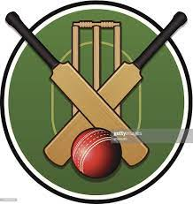

KnowCric
What is Cricket?
Cricket is the game played between two teams.Each team consists of 11 players.Bat and Ball are used for game of cricket.It is the national game of England.It was first played in 16th century.
Formats:Odi's,T20,test match.
Some greats of cricket:Sir Donald Bradmsn,Sir viv Richards,Sachin Tendulkar.
The International Cricket Council is the world governing body of cricket. It was founded as the Imperial Cricket Conference in 1909 by representatives from Australia, England and South Africa. It was renamed as the International Cricket Conference in 1965, and took up its current name in 1987.
Formation-15 June 1909;112 years ago
Headquarters-Dubai,United Arab Emirates(2005-present),London,United Kingdom(1909-2005)
Membership-105* Members
Official languages-English
Chairman-Greg Barclay
Deputy Chairman-Imran khawaja
Ceo-Geoff Allardice
Revenue-GBP 40.7 MILLION
or INR3.97 BILLION
or AUD 74.09 MILLION
Website-Click Here